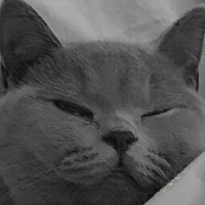

Сжатие изображений с помощью рециркуляционной нейронной сети
Данный проект является реализацией рециркуляционной нейронной сети для сжатия изображений.
Основная идея заключается в обучении сети кодировать и декодировать фрагменты изображения,
тем самым уменьшая объем данных, необходимых для его хранения.
Результат работы
Перемещайте ползунок, чтобы сравнить оригинальное изображение с восстановленным после сжатия.

Оригинал
После сжатия
Описание проекта
Алгоритм разбивает исходное изображение на небольшие блоки (например, 8x8 пикселей).
Каждый блок преобразуется в вектор, который затем подается на вход нейронной сети.
Сеть обучается восстанавливать исходный вектор из его сжатого представления в скрытом слое.
Ключевые особенности
- Рециркуляционная архитектура: Использование прямого (Wf) и обратного (Wb) распространения сигнала для кодирования и декодирования.
- Адаптивный коэффициент обучения: Скорость обучения (learning rate) динамически рассчитывается для каждого шага на основе входных данных, что ускоряет сходимость.
- Покомпонентное обучение: Сеть обучается на каждом блоке изображения по отдельности, что позволяет эффективно обрабатывать большие изображения.
- Нерегламентированные веса: В модели не используются стандартные техники регуляризации, что является одной из особенностей реализованного подхода.
Использованные технологии
- Python: Основной язык реализации.
- NumPy: Для всех матричных и векторных операций.
- Pillow (PIL): Для загрузки, предобработки и сохранения изображений.
← Вернуться на главную